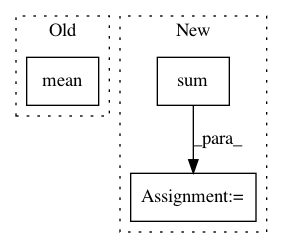

4e97213b48e152344b7429c7d1067e7525bfa4b9,examples/source_separation/utils/metrics.py,,sdr,#,7
Before Change
error = estimate - reference
reference_pow = reference.pow(2).mean(axis=2)
error_pow = error.pow(2).mean(axis=2)
return 10 * torch.log10(reference_pow) - 10 * torch.log10(error_pow)
After Change
error_pow = error_pow.mean(axis=2)
else:
denom = mask.sum(axis=2)
reference_pow = (mask * reference_pow).sum(axis=2) / denom
error_pow = (mask * error_pow).sum(axis=2) / denom
return 10 * torch.log10(reference_pow) - 10 * torch.log10(error_pow)
In pattern: SUPERPATTERN
Frequency: 5
Non-data size: 3
Instances
Project Name: pytorch/audio
Commit Name: 4e97213b48e152344b7429c7d1067e7525bfa4b9
Time: 2020-10-13
Author: 855818+mthrok@users.noreply.github.com
File Name: examples/source_separation/utils/metrics.py
Class Name:
Method Name: sdr
Project Name: PacktPublishing/Deep-Reinforcement-Learning-Hands-On
Commit Name: 8d52bd0b09152b02e0a5504d33593d0c290b88c7
Time: 2018-02-05
Author: max.lapan@gmail.com
File Name: ch14/06_train_d4pg.py
Class Name:
Method Name:
Project Name: scikit-video/scikit-video
Commit Name: 14a7c84fa56c32eb7f4bbe057ce118cbff6ce8fd
Time: 2016-11-16
Author: tgoodall@utexas.edu
File Name: skvideo/measure/scene.py
Class Name:
Method Name: _scenedet_intensity
Project Name: WheatonCS/Lexos
Commit Name: 50b0c10ca037425b4b33ae214391d50cc96ffd72
Time: 2017-07-24
Author: weltch1997@gmail.com
File Name: lexos/processors/analyze/information.py
Class Name: CorpusInformation
Method Name: __init__
Project Name: GRAAL-Research/pytoune
Commit Name: 36e34d67e5a7582ff5414be8ea47fc48a716f000
Time: 2020-09-18
Author: fredy_14@live.fr
File Name: poutyne/framework/metrics/batch_metrics.py
Class Name:
Method Name: bin_acc